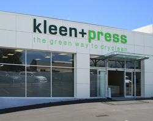

Kleen+Press dry-cleaners and commercial laundry have been operating in Kerikeri in the beautiful Bay of Islands, Northland, New Zealand since 1995. Kleen+Press offer specialist solvent-free dry-cleaning services, commercial laundry as well as linen, uniform, overalls and mat hire. Since 2007 the business operates from its current premises on 7 Homestead Road were we have plenty of customer parking right by the door. Our premises are light and bright and our fit-out and equipment is of a very high standard. Kleen+Press have been placed in the top three most well-presented and stylish dry-cleaners in New Zealand by industry representatives. Our staff share more than 35 years experience in the industry between them, so we are well placed to look after all your dry-cleaning and laundry requirements.
At Kleen+Press we pride ourselves in caring for the environment and we are constantly looking for ways to make our business processes as sustainable as possible. Historically the dry-cleaning process involved the use of highly toxic solvents. At Kleen+Press we only use eco-friendly, 100% biodegradable detergents which are harmless to you, your clothes and the environment. Throughout the business we subscribe to a green philosophy. Wherever possible we use eco-friendly products and packaging that are either biodegradable or recyclable. Our dry-cleaning machines and dryers are regularly maintained and calibrated for efficient power consumption and of course to ensure your garments are always treated at the right temperature.
Another environmental contribution, well supported by our customers is the recycling of garment hangers. For every garment hanger returned we donate $0.10 to the Puketi Forest Trust for the purchase of rat traps and annually we sponsor several hectares of Puketi forest.
Kleen+Press are proud to have received the Gold Ecostar Award for the third year in a row. To qualify for the award, Kleen+Press had to put in place systems to reduce waste. The business also had to have less than 10% of materials that could be reused, recycled or composted in its refuse when it was audited by CBEC EcoSolutions.
Far North Mayor John Carter presents Kleen+Press owner Els Bodifee with a Gold Ecostar Award for reducing waste.
Kleen+Press use a non-solvent process to dry-clean. We are the only dry-cleaner to do so in Northland which allows us to clean a far greater range of items than any other dry-cleaner in the North. This includes leather, suede, thermal-backed curtains and wedding dresses.
Kleen+Press look after businesses in Kerikeri and surroundings. All laundry is processed to hospital-grade laundry standards. For our commercial customers we provide a laundry delivery and pick-up service. Our commercial laundry customers include a local health service and the local retirement village.
Kleen+Press provide businesses with non-slip rubber-backed mats in a variety of sizes and colours. Mats are changed on an agreed schedule depending on the type of business and requirements of our customers. Our mat rental customers include supermarkets, banks, hardware stores, service stations, bars etc.
Kleen+Press will clean anything from bedding (blankets, bedspreads, duvet inners, sleeping bags, etc) to cushions and furniture covers. Curtains (including mildew removal) can be made to look new again for a fraction of the cost of replacing them.
We offer a complete repair and alteration service to our retail and commercial customers. From replacing zips or repairing holes to shortening of pants and dress alterations, we can look after you.
Local engineering, mechanical and service businesses rent our overalls for a fixed price per month. We supply polycotton as well as cotton overalls. We can also supply hand towels, roller towels and tea towels.
Mon to Fri: 8:00am - 5:00pm
Sat: 9:30am - 1:00pm
Phone: 09 407 5307
Email: info@kleenandpress.co.nz
Els, the owner of the business is in charge of organising and scheduling the commercial laundry operations, and hire services of uniforms, overalls, floor mats, roller towels, etc. for commercial clients. She is also your point of contact for financial matters and of course the accounts.
Ripeka, 2IC, looks after the retirement village together with Karewa, Fi and Mari, and serves customers in the shop when required. Together with Els she will look after your dry-cleaning.
Karewa looks after our largest cusomer, the local retirement village, together with Ripeka and Fi. You will also see her in the shop, serving customers. She also spends quite a bit of time on the road doing deliveries and looking after our commercial customers.
Together with Karewa, Ripeka and Mari, Fi looks after the retirement village and she will serve customers in the shop when required. You will see Fi in the shop every Friday and Saturday.
Together with Karewa, Ripeka and Fi, Ochien looks after the retirement village.
Yvette is an expert in pressing your clothes, curtains, wedding dresses and anything that needs pressing. She also doubles as our seamstress.